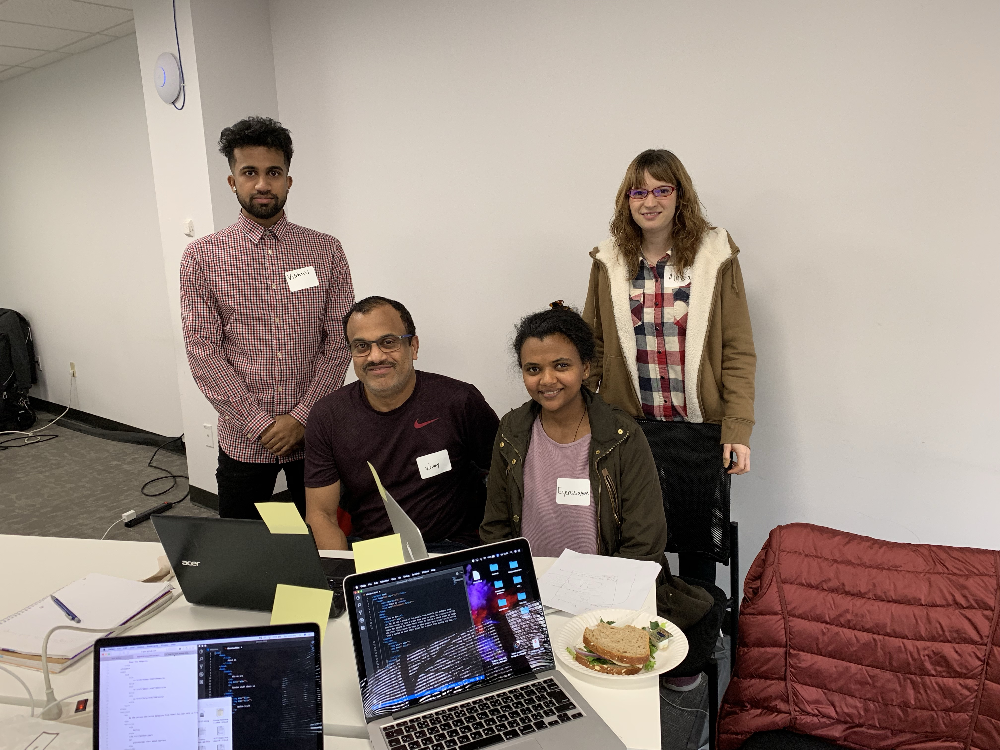

<!DOCTYPE html>
<html lang="en" dir="ltr"></html>
    <head>
        <meta charset="utf-8">
        <title>About Us </title>
        <link rel="stylesheet" type='text/css'href="aboutus.css">
        <link href="https://fonts.googleapis.com/css?family=Roboto+Mono" rel="stylesheet">
    </head>
    <body>
        <nav>
                <a class="butn"href="index.html">Home</a>
        </nav>
    <header>
        <h1>Who We Are</h1>
        
        <p class='hi'> Hi. We are a group of fun people from Seattle who believe that everyone needs to take a break from time to time. We created an online space for people to renew their minds by taking a short break to laugh and clear their mind. We hope to make people more productive by giving them a outlet to rest their minds for a short time during the day.</p> 
    </header>
    <hr>
    <section>
        <div class="sidebyside">
                <h2>Go from this:</h2>
                
                <h2>To this:</h2>
                
            </div>
        <div class="science">
          <p>Taking breaks while working has many mental and physical benefits. Breaks increase productivity and lower your chance of developing "decision fatigue". Decision fatigue occurs when the prefrontal cortex in your brain is over used which leads to simple decision making, headaches and procrastination.</p>
          <a href="https://open.buffer.com/science-taking-breaks-at-work/">Read more about the science of taking a break</a>
        </div>
    </section>
    </body>
 
</html>